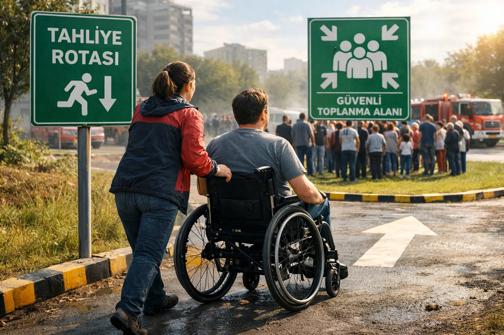

Engelli Bireyler İçin Deprem Tahliye Planı
Türkiye'de 8.5 milyon engelli birey yaşıyor. Standart deprem önerileri çoğu zaman onlar için yetersiz veya tehlikelidir. İşte her engel grubu için uyarlanmış rehber.
Tekerlekli Sandalye Kullanıcıları
Sarsıntı sırasında: 1. Sandalyeyi durdurun, frenleri kilitleyin. 2. Kolumlayla başınızı ve boynunuzu koruyun (kapan). 3. Sarsıntı bitene kadar sandalyeden çıkmayın.
Tahliye için: güvenli kat belirleyin (asansör çalışmayacak; merdiven iniş asistanı var mı?). Yedek tekerlekli sandalye ve taşıma koltuğu araçta veya evde bulundurun.
Görme Engelli Bireyler
Önceden mekan haritası ezberi: evdeki her odanın en güvenli noktasını bilin. Mobilya yerleri değişmesin — deprem öncesi tanıdığınız yerleşim sarsıntı sonrası navigasyona yardım eder. Baston aksesuarları: yedek baston + baston için kırmızı bez (kaybolma durumunda). Sesli uyarı cihazları: evde duman dedektörü, AFAD Acil uygulaması (sesli uyarı).
İşitme Engelli Bireyler
Uyarı sinyalleri sesli olduğu için ek önlem gerekir. Titreşimli uyarı cihazları: yatak altına konan titreşim pili (deprem sırasında uyandırır). Görsel alarm: yangın gibi deprem için de görsel flash alarm gerekebilir. Aile üyeleriyle özel işaret: eğer işaret dili biliyorsanız kendi deprem işaretinizi geliştirin.
Bedensel Kısıtlılığı Olan Bireyler
Kalp yetmezliği, omurga sorunları, yaşlılık kaynaklı hareket kısıtı olanlar: Yatak yanında sağlam yer — yatak altına girmek yerine yataktan inip kenarda çök-kapan yapın. Önceden yerleştirilmiş yastık seti başınızı korumak için. Rahat kıyafetlerle uyuyun — tahliye için değiştirme süreniz yok.
Yalnız Yaşayan Engelli Bireyler İçin Sistem
Komşu ağı: yakın komşularla özel anlaşma — deprem olursa birbirinizi kontrol edersiniz. AFAD özel kayıt: e-Devlet'ten "özel durumu olan birey" kaydı yapabilirsiniz. AFAD deprem sonrası sizi özel öncelikle arar. Personel alarmı: kolunuza takabileceğiniz panik butonu cihazı alın (2.000-5.000 TL).
Tıbbi Gereksinimleri Olan Bireyler
Oksijen tüpü, insülin pompası, diyaliz cihazı vb kullanıcılar: Her cihaz için yedek + pil hazırda tutun. 30 günlük ilaç stoku çantada. Tıbbi kimlik kartı — cüzdanda ve boyun künyesinde. Hastane planı — hangi hastaneye gidileceğinizi aile bilsin.